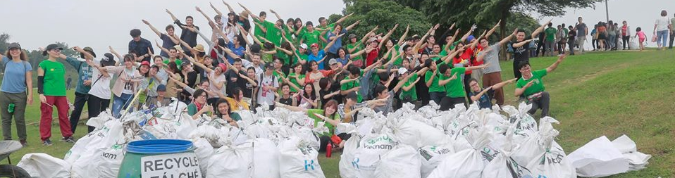

Dọn rác ủng hộ Ngày Trái Đất
Ngày 20/7/2019

Công viên Thống Nhất
Thời gian: 8h00 đến 11h30 và từ 13h30 đến 17h.
Chúng tôi cần sự giúp sức của 300 tình nguyện viên.
Ngày Trái Đất được kỉ niệm trên toàn thế giới và nhóm Keep Hanoi Clean cũng sẽ lần thứ 3 tham gia sự kiện toàn cầu này. Hãy cùng tham gia cùng chúng tôi để gìn giữ một môi trường xanh và sạch hơn!
Bạn có thể đăng kí tại đường link dưới đây: 👇
Đăng kí
Địa điểm:
Chúng ta sẽ tập trung tại đảo trung tâm công viên Thống Nhất, toạ lạ trong khuôn viên Hồ Bảy Mẫu. Bạ có thể tìm địa chỉ cụ thể theo đường link google map sau đây:
👉 Địa chỉ
Chỗ đỗ xe:
Chỗ để xe máy sẽ nằm ngai tại cổng công viên trên đường